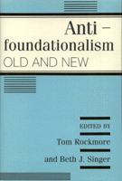

Essays that follow and expound on the foundationalism/antifoundationalism debate throughout the history of philosophy
Essays that follow and expound on the foundationalism/antifoundationalism debate throughout the history of philosophy


 Essays that follow and expound on the foundationalism/antifoundationalism debate throughout the history of philosophy
Essays that follow and expound on the foundationalism/antifoundationalism debate throughout the history of philosophy

|  |
Antifoundationalism Old and Newedited by Tom Rockmore and Beth J. Singercloth EAN: 978-0-87722-881-3 (ISBN: 0-87722-881-7) |
"[The book] illuminate[s] the philosophical urge to attain certainty and system, and especially system that is based on certain and indubitable ground. The historical approach works well.... This collection makes no pretensions, yet manages to deliver important contributions to the continuing inquiry."
—John Lachs, Vanderbilt University
The debate over foundationalism, the viewpoint that there exists some secure foundation upon which to build a system of knowledge, appears to have been resolved and the antifoundationalists have at least temporarily prevailed. From a firmly historical approach, the book traces the foundationalism/antifoundationalism controversy in the work of many important figures—Animaxander, Aristotle and Plato, Augustine, Descartes, Hegel and Nietzsche, Habermas and Chisholm, and others—throughout the history of philosophy. The contributors, Joseph Margolis, Ronald Polansky, Gary Calore, Fred and Emily Michael, William Wurzer, Charlene Haddock Siegfried, Sandra B. Rosenthal, Kathleen Wallace, and the editors present well the diversity, interest, and roots of antifoundationalism.
Acknowledgments
Introduction – Tom Rockmore
1. The Limits of Metaphysics and the Limits of Certainty – Joseph Margolis
2. Foundationalism in Plato? – Ronald Polansky
3. Foundationalism and Temporal Paradox: The Case of Augustine's Confessions – Gary Calore
4. Hierarchy and Early Empiricism – Fred S. Michael and Emily Michael
5. Hegel, German Idealism, and Antifoundationalism – Tom Rockmore
6. Nietzsche and the Problem of Ground – Wilhelm S. Wurzer
7. Like Bridges without Piers: Beyond the Foundationalist Metaphor – Charlene Haddock Seigfried
8. Pragmatism and the Reconstruction of Metaphysics: Toward a New Understanding of Foundations – Sandra B. Rosenthal
9. Metaphysics without Mirrors – Beth J. Singer
10. Metaphysics and Validation – Kathleen Wallace
About the Contributors
Index of Names
Index of Titles
Tom Rockmore is Professor and Chairman in the Department of Philosophy at Duquesne University.
Beth J. Singer is Professor of Philosophy at Brooklyn College of the City University of New York.
© 2015 Temple University. All Rights Reserved. This page: http://www.temple.edu/tempress/titles/843_reg.html.